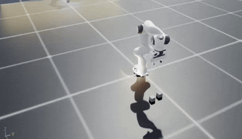
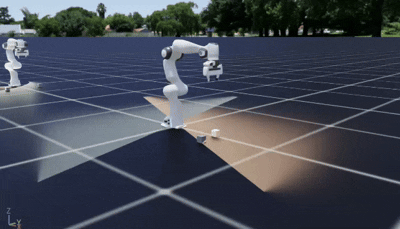
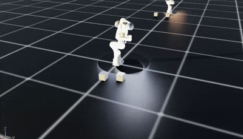
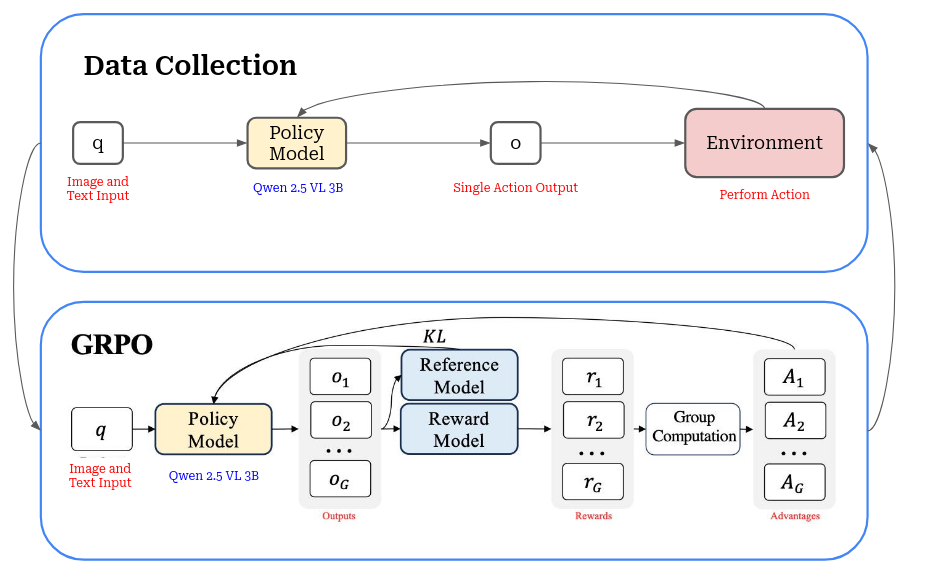
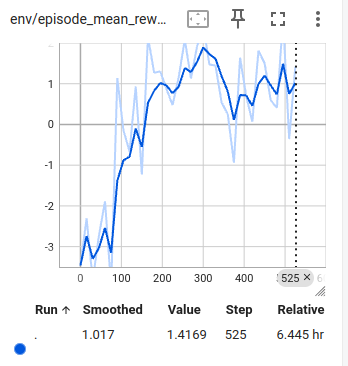
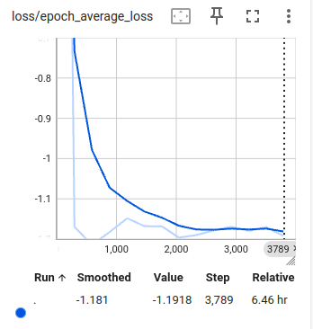
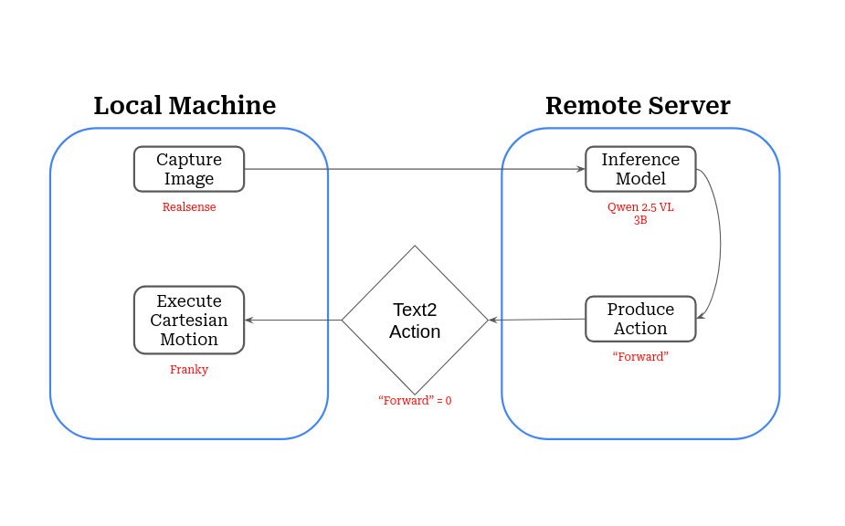

|
RLROBO: VLM Fine-Tuning with RL for Robotic Manipulation |

Demonstration of the VLM-based policy deployed on the Franka Panda arm. |
Overview |
|
Vision Language Models (VLMs) struggle with spatial reasoning tasks such as robotic manipulation due to their training on static image-text pairs. To address this, we present RLROBO, a framework that fine-tunes VLMs using a modified Group Relative Policy Optimization (GRPO)reinforcement learning algorithm. This pipeline is the starting point that enables the VLM to effectively interpret visual and linguistic inputs for basic robotic manipulation tasks, enhancing sample efficiency and facilitating sim-to-real transfer. |
Task Creation |
|
To understand the capabilities of the fine-tuned VLM policy, we designed a set of basic manipulation tasks that require spatial knowledge and object interaction. These tasks were inspired by panda_gym and include:

Pick Place Task Demonstration

Stack Task Demonstration

Slide Task Demonstration |
Methodology and Architecture |
|
A modified version of GRPO (Group Relative Policy Optimization) was used to fine-tune Qwen 2.5 VL 3B, a pre-trained Vision Language Model. Due to initial hardware limitations, the 3B parameter model was selected to balance performance and resource requirements. GRPO leverages multiple action generations per observation, allowing it to choose the most effective action, which enhances sample efficiency during training. Since the training needed to be done online, a modification was made to the the GRPO algorithm to work in an online setting rather than the original offline setting. The process consists of a rollout portion and a training portion: |
|

Diagram illustrating data collection and the modified GRPO loop. |
Results and Deployment |
|
The training is still in progress, but preliminary results indicate that the fine-tuned VLM policy is starting to learn to perform the basic manipulation tasks with increasing proficiency. Utilizing the parallel environments, data collection is quick and efficient, allowing for rapid iteration and improvement of the policy. After training is complete, we use a Franka Panda arm to deploy the policy in a real-world setting. To do this, we have to set up communication bwtween the local machine connected to the arm and the remote machine running the VLM inference:

Reward curve over time

Loss curve over time |
|

Diagram illustrating communication between the Franka Panda arm and the VLM inference server. |
Conclusion and Future Work |
|
The policy seems to be plateuing in performance, so future work will focus on hyperparameter tuning and training for an extended period to further enhance the policy's capabilities. Additionally, exploring more complex manipulation tasks and integrating additional sensory inputs to improve the policy's robustness and adaptability in dynamic environments will be considered. Overall, RLROBO represents a promising step towards enabling VLMs to effectively perform robotic manipulation tasks through reinforcement learning fine-tuning. Though the pipeline is complete, the training itself is ongoing and needs to be refined. |
|
Website template from Jon Barron. |